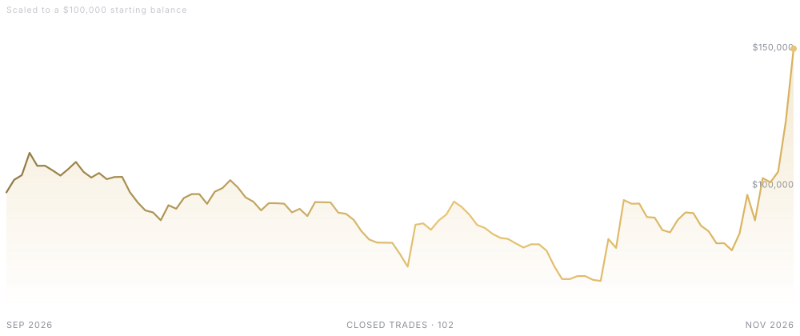

Gold XAU/USD
My primary market. Session structure, dollar correlation and safe-haven flows around CPI, NFP and Fed decisions.
Abuja, Nigeria · Trading since 2021
I'm Divine Abba — a discretionary trader and market analyst. I publish my trade ideas for free every day, show my reasoning instead of just my results, and build the web tools I use to trade.
or follow me on LinkedIn — I post charts there tooMarkets I cover
My primary market. Session structure, dollar correlation and safe-haven flows around CPI, NFP and Fed decisions.
Higher beta, wider ranges. I trade it for the moves gold is too slow to give, with tighter size.
The cleanest read on dollar strength. London-open liquidity sweeps and trend continuation.
Carry, intervention risk and yield spreads. A market where news matters as much as the chart.
Supply headlines and inventory data. Traded selectively, around OPEC and EIA events.
Liquidity-driven and 24/7. I use it to express risk appetite, not to chase volatility.
How I trade
Higher-timeframe bias first. Where is price relative to the week's range, the prior high/low and the dollar? No bias, no trade.
I wait for price to reach a level I identified before the session opened — liquidity sweeps, broken structure, session extremes.
Position size is calculated from the invalidation point. If the stop is where I'm wrong, the loss is defined before entry, every time.
Every trade is journaled with a screenshot and the reason. The review is where the edge actually comes from.
Track record
The equity curve from my trading journal — 102 closed trades from September to late November, kept with the same risk rules and the same London and New York sessions I trade every week.

Second account · $100,000
A $100,000 account, traded alongside the one above through the same week in November. Ten closed trades between 13 and 20 November 2026, starting at exactly $100,000. These are the broker’s own balances — nothing here is scaled, rebased or modelled.

Ten trades over six days is a sample, not proof of an edge. Read the shape of it honestly: the account sat underwater for most of the week, and two gold and silver shorts on the final morning produced $30,474 — more than the entire net result. Strip those two out and the week is down $9,419. Position sizes also ran to roughly 24× leverage at the peak, which is why single trades moved the balance by five figures. Past performance is not indicative of future results, and full statement exports are available on request.
Trading leveraged products carries a high level of risk and can result in the loss of all your capital. Nothing on this page is financial advice or a solicitation to trade.
Free · Daily
Charts, levels, bias and management — posted as I take them. No signal-selling, no paid group, no hype. Join and watch me work before you decide anything.
Join the Telegram channelSelected work
Live products, not mockups. Every card below is a running deployment — open it and use it.
Product · Next.js
A prop-firm comparison tool that checks account rules against a trader's own preferences, plus a private CSV analyser that turns a broker export into realised performance metrics — with every unknowable clearly labelled.
Visit live siteFull-stack · Auth
A secure web banking portal: registration and sign-in, authenticated sessions, account dashboard and encrypted transport end to end — built as a complete front-end plus API, not a static shell.
Visit live siteTeam build · Capstone
A job-search platform for the Nigerian market: employer and candidate flows, searchable listings with salary bands, saved applications and profile building. Delivered as a group capstone project.
Visit live siteNeed something like this? I build landing pages, dashboards and small full-stack apps.
Book a buildAbout
I started trading in 2021 out of a simple obsession: understanding why price moves. That turned into a full-time practice across precious metals, FX majors, crude and crypto — the same six instruments I still trade today, because depth in a few markets beats a shallow opinion on fifty.
My work is discretionary and process-driven. I trade a small number of high-conviction setups around session liquidity, key levels and macro catalysts, and I size every position from the stop — never the other way round. When a trade is wrong, the loss is small and already planned. When the read is right, I let the position work.
Outside the markets I'm a software developer — HTML, CSS, JavaScript, Node.js — and I build the tools on this page myself. Before that, an engineering background (HND Civil Engineering, Distinction) taught me to check the numbers before trusting the drawing.
I publish my analysis openly. Not because every call is right — plenty aren't — but because a track record you can't inspect isn't a track record. You can see how I think, what I got wrong, and how I managed it.
Follow along
If Telegram isn't your thing, LinkedIn is where the slower, longer-form version goes — trade breakdowns, session recaps and the occasional build update.
Contact
Web development enquiries, collaborations, or questions about the Telegram channel — my inbox is open.